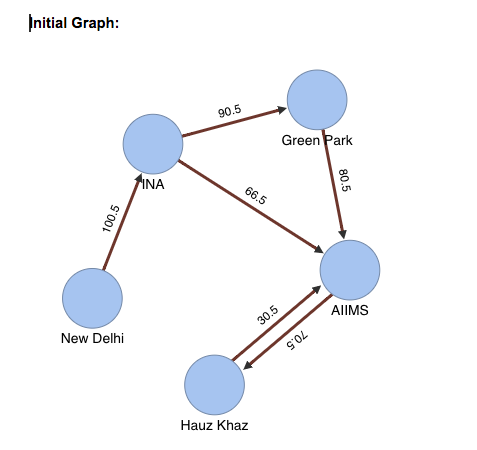
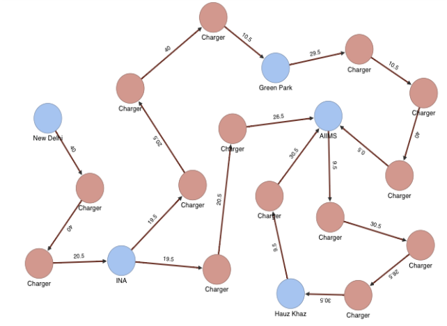

About The Simulator
The Simulator pre-populates a small area with 5 locations with varying distances connected by roads. It uses OrientDB, a Graph database, to store the Locations as Vertices and roads as Edges of the Graph. It uses dummy data as parameters viz. distances, traffic density, road conditions, climate conditions etc. to identify the minimum mileage achieved at a given Vertex.
In the Simulator Page, you'll find options to run the Algorithm and see the visualization of the Graph (Map) Checkout the Vertices and Edges and the Station Vertices which you'll get before and after running the algorithm.

After running the Algorithm, the graph visualization will show the identified location of the Charging Stations.

Check out the Simulator here
Behind This Simulator Project
We are a team of 5 who have some years of experience with them in the Software Industry

Manish Ranjan
B.Tech, Principle Engineer (Makemytrip)
Dr. Amlesh Sinha
PhD, Associate Director (Makemytrip)
Ashish Srivastava
MCA, Senior Manager (Makemytrip)
Prashant Singh
B.Tech, Lead Developer (Makemytrip)